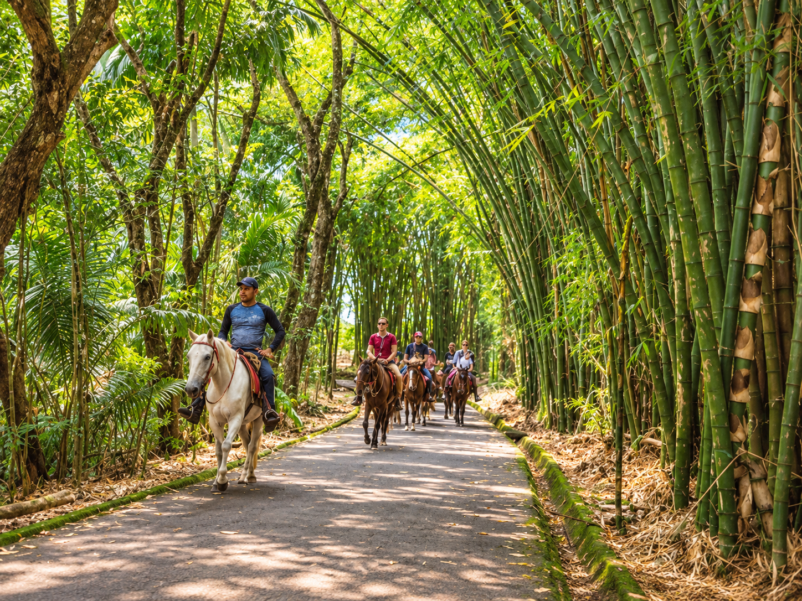
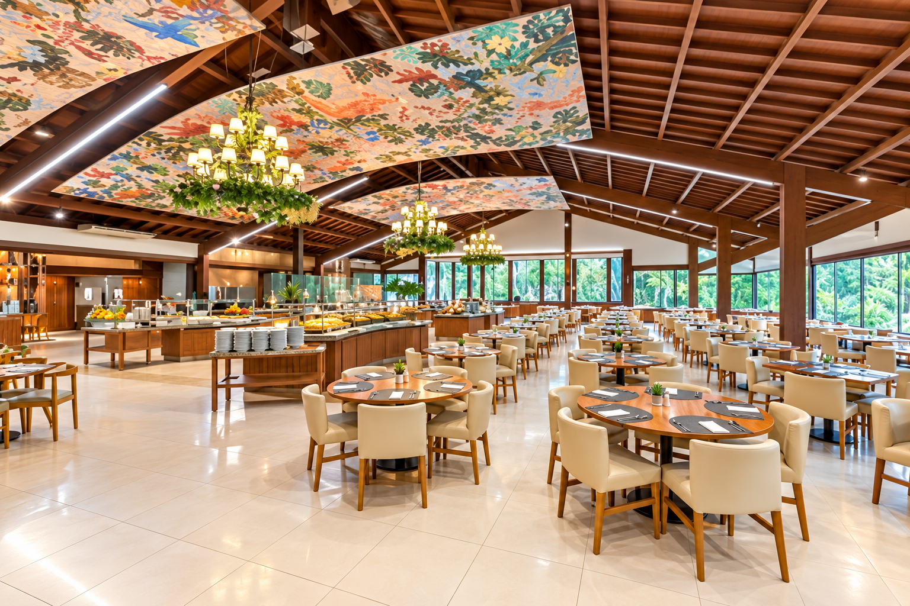
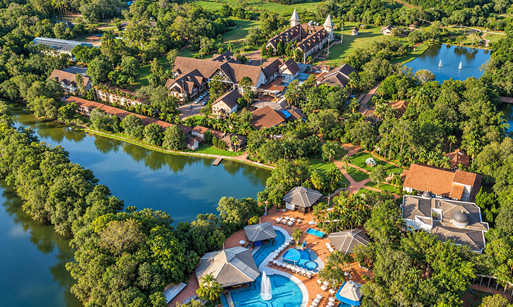
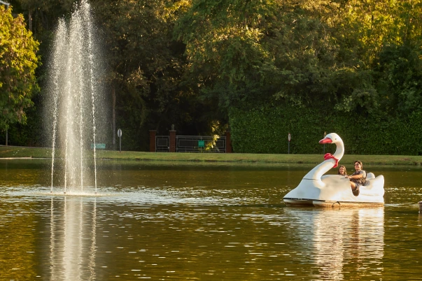
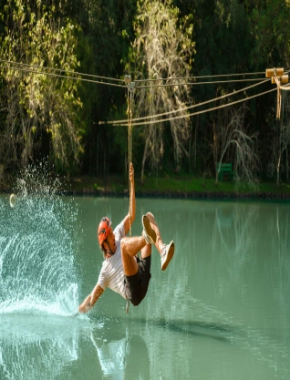
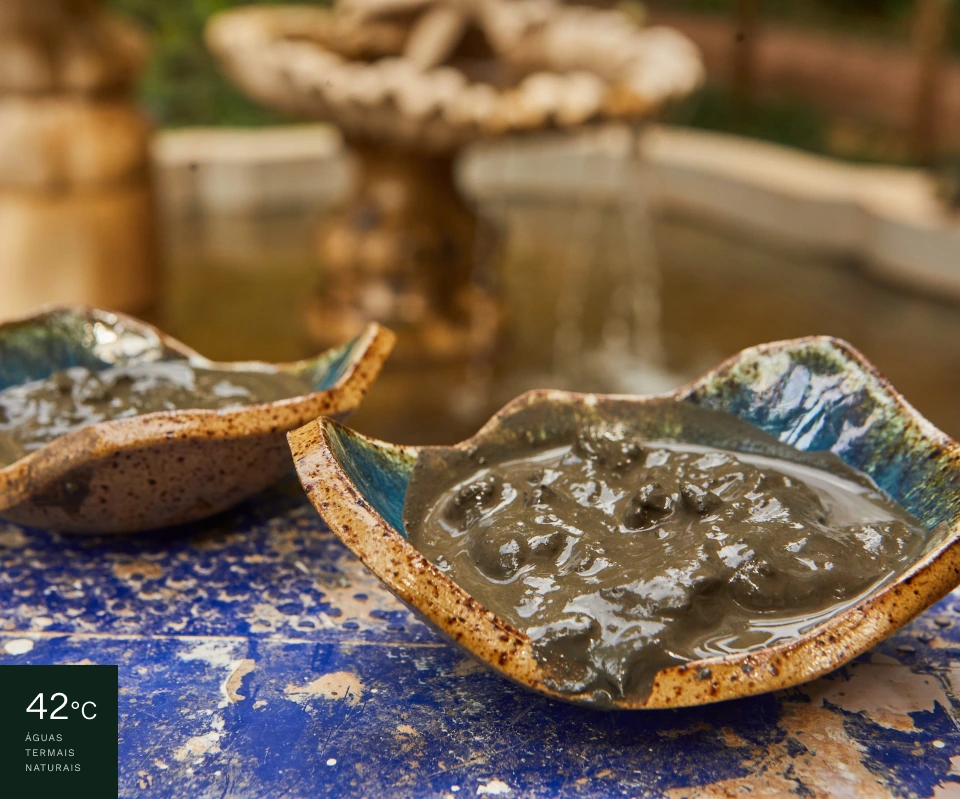

LAGOS DE JUREMA
Bons momentos à beira das águas.
Um destino para descansar e aproveitar a viagem no seu ritmo.
Planejar estadia
CONHEÇA O LAGOS DE JUREMA
Uma estadia para aproveitar com calma.
Um refúgio elegante entre piscinas e áreas verdes, com estruturas completas para famílias desfrutarem de conforto, lazer e natureza em uma experiência marcante.
Nas avaliações do Google, os hóspedes destacam a beleza do complexo, o atendimento atencioso, o conforto das hospedagens e uma sensação de férias de alto padrão.
Ver fotografias do complexo ↗CONHEÇA OS AMBIENTES
Estrutura e lazer
Conheça os espaços do complexo e as opções para aproveitar a estadia.
Estrutura do complexo
Acomodações sofisticadas
Categorias espaçosas, ambientes bem estruturados e detalhes que garantem uma estadia confortável para famílias e casais.
Restaurantes e serviços
Gastronomia variada, espaços acolhedores e serviços pensados para proporcionar praticidade e cuidado durante toda a viagem.
Espaços de lazer
Piscinas e paisagens
Águas refrescantes, jardins bem cuidados e espaços amplos para aproveitar dias tranquilos em um ambiente luxuoso e acolhedor.
Experiências para toda a família
Atividades e áreas de convivência criam momentos especiais, combinando lazer de qualidade com a exclusividade da hospedagem. Desfrute de pedalinho, tirolesa, cavalgar, águas da lama e outras aventuras para todas as idades.
EXPERIÊNCIAS NO LAGOS
Momentos para viver e recordar
Adicione novas fotografias aos slides para apresentar o lazer, os ambientes e os momentos especiais do complexo.






VÍDEO DO COMPLEXO
Lagos de Jurema. Como você nunca viu.
Descubra os ambientes, paisagens e experiências do resort.
LAGOS DE JUREMA
Acomodações
Compare as categorias e clique em uma opção para conferir as informações.
As características, configurações de camas e disponibilidade devem ser confirmadas com a central de reservas.